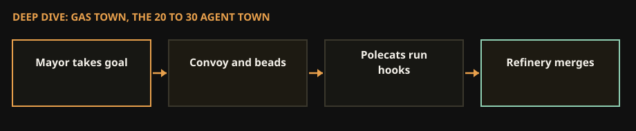

Deep Dive: Gas Town, the 20 to 30 Agent Town
Every role, command, and data structure from the public repo README, read in full, plus a solo lite form. Source: github.com/steveyegge/gastown, Steve Yegge. Confidence: High for repo facts, Medium for failure modes, since the launch post stands unopened in full.

What Gas Town is
A workspace manager for 20 to 30 agents. Work persists in git backed hooks and a Beads ledger, so agent sessions can die and the town keeps the state. The human talks to one coordinator. The coordinator runs the town.
Roles, exact jobs
Mayor Primary coordinator. Full workspace context.
Start: gt mayor attach
Town The workspace root, ~/gt/
Rigs One container per project, wraps a git repo
Crew A human personal workspace in a rig
Polecats Worker agents. Fixed identity, throwaway sessions
Hooks Git worktree storage pinned to an agent
Convoys Work units that bundle beads for one goal
Beads Git backed issues. ID form: prefix + 5 chars,
gt-abc12, hq-x7k2m
Molecules Workflow templates in motion
Formulas TOML files that create molecules
Witness Per rig life cycle manager: watch polecats,
spot stuck work, recover, clean up. No build work
Deacon Cross rig supervisor on patrol: gt patrol
Dogs Infra workers the Deacon sends. Boot is the
triage Dog. Heartbeat each 3 minutes:
daemon to Boot to Deacon to Witness and Refinery
Refinery Per rig merge queue. On gt done: batch merge
requests, run gates, bisect merge to main.
Polecats never push to main
Escalation gt escalate -s HIGH "..." routes Deacon to
Mayor to Overseer. Levels: CRITICAL P0,
HIGH P1, MEDIUM P2
The MEOW flow
- Tell the Mayor the goal.
- The Mayor analyzes and creates a convoy.
- The Mayor spawns agents and slings beads onto hooks.
- Agents run under the propulsion rule: if work sits on your hook, you run it. No idle wait for a push.
- The Witness watches each rig. The Deacon patrols across rigs.
- The Refinery merges in order, with gates.
- The Mayor summarizes for the human.
Commands, verbatim from the README
brew install gastown
gt install ~/gt --shell --git
gt up boots Dolt, daemon, Deacon, Mayor,
per rig Witness and Refinery
gt doctor --fix
gt rig add myproject <repo-url> [--prefix mp]
gt mayor attach
gt convoy create "Feature X" gt-abc12 gt-def34 --notify --human
gt sling gt-abc12 myproject
gt convoy list
gt agents
gt prime context recovery for an agent
gt feed [--problems] town view: GUPP Violation, Stalled,
Zombie, Working, Idle
gt dashboard [--port 3000]
gt seance talk to a predecessor session
Formulas: workflows as TOML
Formulas live in internal/formula/formulas. The release formula runs bump version, run tests, build, create tag, publish, each step with needs edges. Commands: bd formula list, bd cook release --var version=1.2.0 to test, bd mol pour release to run with checkpoint recovery. Two wisp forms exist: root only wisps create steps at run time, poured wisps fix steps in advance with checkpoints.
Prerequisites and the honest cost
Needs: Git 2.20 plus, Go for source builds, Beads bd 0.57 plus, sqlite3, tmux for full mode. Runtimes: Claude Code by default, with presets for Gemini, Codex, Cursor, Amp, Copilot and more. His own warning stands in round 2 notes: most users are not ready. Run 3 to 5 parallel agents well first. The town pattern pays at 10 plus sustained agents and costs real money at all times.
Gas Town Lite, the solo form
- One coordinator chat acts as Mayor. It holds the goal list and the state file.
- Workers are plain parallel sessions, one worktree each. No town software.
- A beads file in plain markdown holds tasks with IDs: two letter prefix plus a number.
- A merge order rule replaces the Refinery: one merge at a time, gates run per merge.
- A patrol habit replaces the Deacon: the coordinator scans for stalled workers at each check in and restarts or kills by rule.
- Escalation rule: a worker stops and reports on a gate fail. It never pushes past a red gate.
Apply this to your work
Your parallel build lanes already run Mayor style work through coordinators. The lite form adds the three parts your lanes miss at times: a persistent task ledger with IDs that survives session death, a merge queue rule of one at a time with gates, and a patrol scan that names stalled workers in plain states. Your watermark sweep and repo pushes fit the ledger form at once: each repo one bead, each push one gate check by blob hash.
Replication checklist
- Do not install Gas Town until one project holds 10 plus sustained parallel agents for a week.
- Adopt the ledger, the merge rule, and the patrol scan in lite form now.
- Write your escalation levels in one line each: P0 stop all, P1 coordinator decides, P2 log and continue.
Prompt file: prompts/gas-town-lite.md.
Visual map of this page
Two views of one page: a Mermaid flow for work order, rendered by the local Mermaid library in this folder, and a markmap for concept groups.
Mermaid source, for offline read
flowchart TD A[Human goal] --> B[Mayor] B --> C[Convoy of beads] C --> D[Polecats on hooks] D --> E[Witness watch] E --> F[Refinery gates] F --> G[Merge to main] B --> H[Deacon patrol] H --> E
How to read the flow diagram. Step 1: start at the first box. Step 2: follow each arrow to the next stage. Step 3: at a branch box, read both paths before a choice. Step 4: a loop arrow means work returns for one more pass vs a test.
Markmap: concepts on this page
- Deep Dive: Gas Town, the 20 to 30 Agent Town
- Roles
- Mayor
- Witness
- Deacon and Dogs
- Refinery
- Data
- Beads ledger
- Hooks in worktrees
- Formulas in TOML
- Lite form
- Ledger file
- One merge at a time
- Patrol scan
- Roles